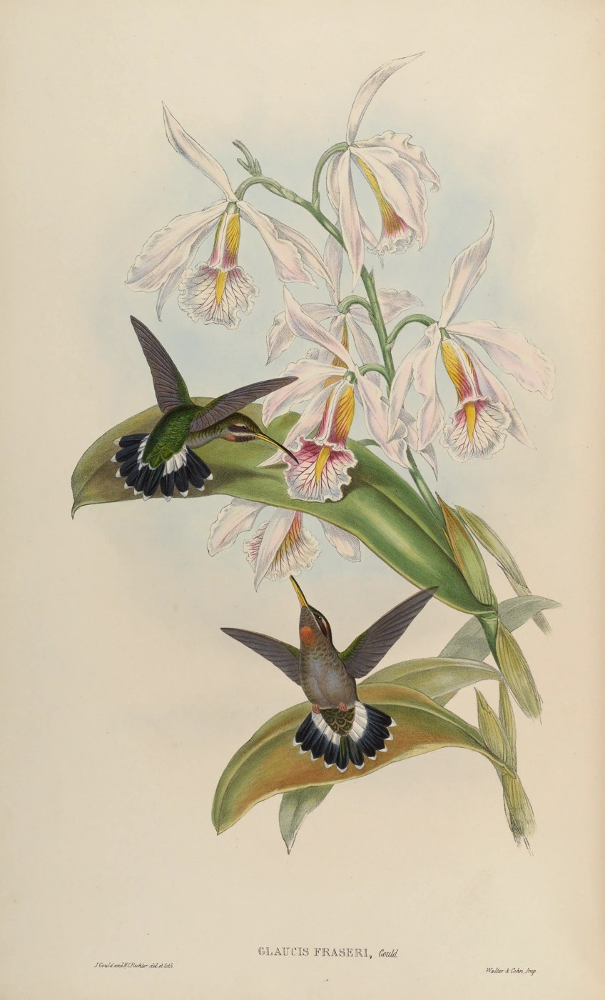

Glaucis fraseri (A Monograph of the Trochilidae, Volume 1, Plate 12)
John Gould & Henry Constantine Richter · 1849–61 · Coloured lithograph · Smithsonian Libraries and Archives
Free to use
Gould named this hummingbird after a Mr Fraser, who collected the specimens at Babahoyo in Ecuador and reported finding the bird at the edge of the virgin forest, always alone. Henry Constantine Richter, who made the lithograph, went unnamed on the title pages, as illustrators then usually did, and the extent of his part in Gould's books came to light only in 1978.